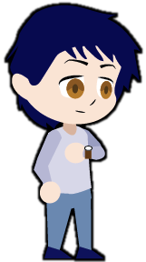

Everyman
"All men and women are equal"
The everyman is the representation of the audience. Through their eyes, the audience can learn about the new world they are interacting with. With this in mind, they desire to belong and connect with others. They can be down to earth, developing ordinary solid virtues. However, their fear of standing out from the crowd can cause them to lose sight of one's self. Regardless, they have room to grow, combining realism and empathy to the new world.
Also known as:
- Regular guy/girl
- Realist
- Good Neighbor
- Average One
- "Isekai"
Qualities
- Empathy
- Survival Instinct
- Sense of being Chosen
Flaws
- Self-Doubt
- Eagerness to Please
- Inexperience